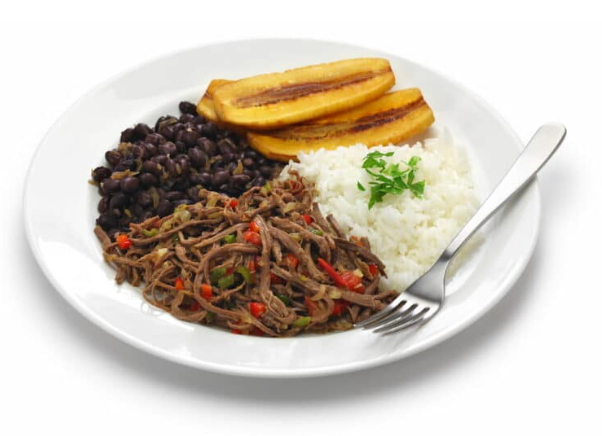

Inicio
Pabellón Criollo Venezolano

Cada componente del pabellón criollo venezolano tiene su historia, su técnica y su sabor. El arroz blanco va como base neutral, las caraotas negras (sí, porotos negros en criollo venezolano) con sabor intenso y especiado; la carne mechada que se cocina largo y lento, hasta que se deshace, y las tajadas (plátano maduro y frito), doradas y dulzonas, para coronar el plato.
Ingredientes
Para la carne mechada:
- 600 g de carne para mechar (falda, matambre o similar)
- 1 cebolla
- 1 morrón rojo
- 2 dientes de ajo
- 2 tomates perita
- 1 hoja de laurel
- 1 cucharadita de comino
- Sal
- Pimienta
- Aceite
Para las caraotas negras:
- 250 de porotos negros
- 1 cebolla
- 1 diente de ajo
- 1/2 morrón
- 1 cdita. de comino
- 1 cdita. de azúcar
- 1 hoja de laurel
- Sal
- Pimienta
- Aceite
Para el arroz:
- 1 taza de arroz blanco
- 2 tazas de agua
- Sal
Preparación
- Hervir la carne con sal y laurel alrededor de 1 o 2 horas, hasta que esté bien tierna. Desmechar.
- Preparar un sofrito con cebolla, ajo y morrón, una vez que la cebolla esté transparente agregar los tomates picados.
- Cuando cambie de color el sofrito incorporar la carne y cocinar todo junto con los condimentos. Agregar un poco del caldo de la carne si hace falta jugosidad. Reservar.
- Cocinar los porotos (previamente remojados desde la noche anterior) hasta que estén tiernos, alrededor de 45 minutos/1 hora. En una sartén aparte, hacer un sofrito con las verduras picadas y agregar los porotos. Condimentar bien y cocinar unos minutos más. Reservar.
- Hervir el arroz con sal y agua, hasta que esté cocido y suelto. Reservar dejando reposar 5 minutos tapado.
- Pelar los plátanos, cortarlos al bies en rodajas /tajadas de 1 cm y freírlos en aceite caliente hasta que estén dorados, luego escurrir sobre papel absorbente.
- Para armar el plato servir el arroz blanco, la carne mechada, las caraotas y las tajadas en sectores separados. Acompañar con palta, queso rallado, huevo frito o arepas, si se desea.